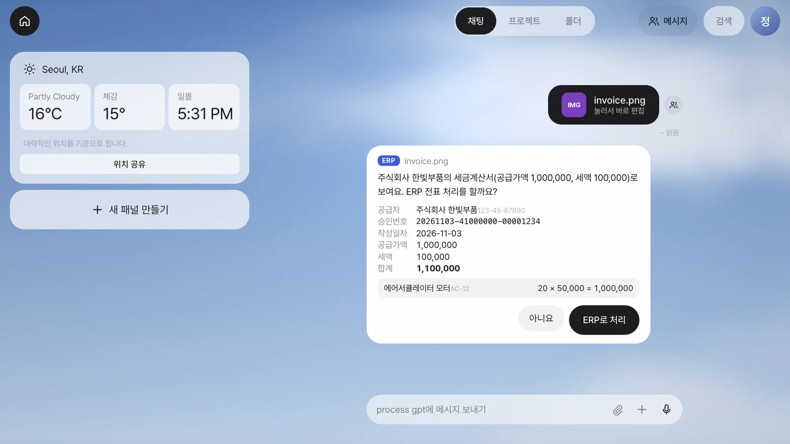
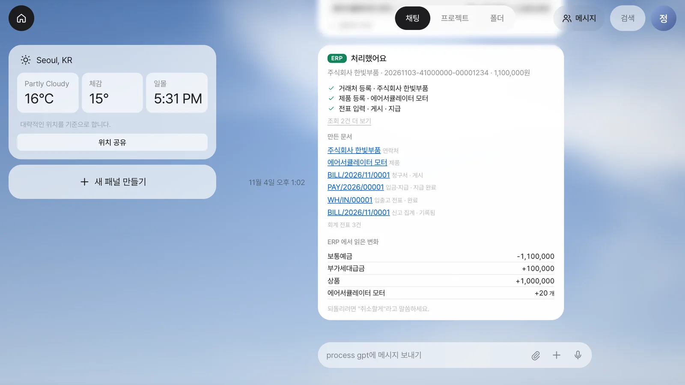
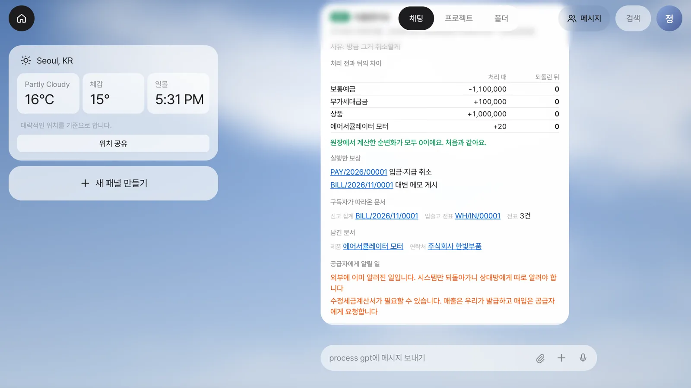
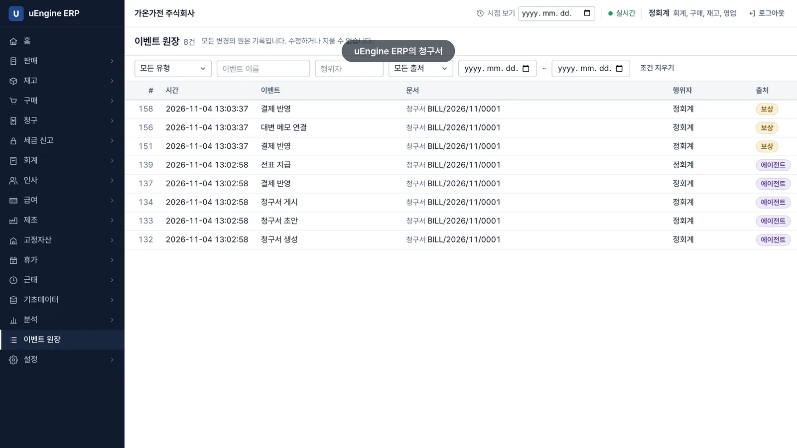
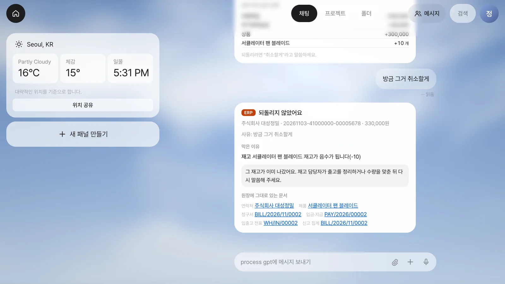
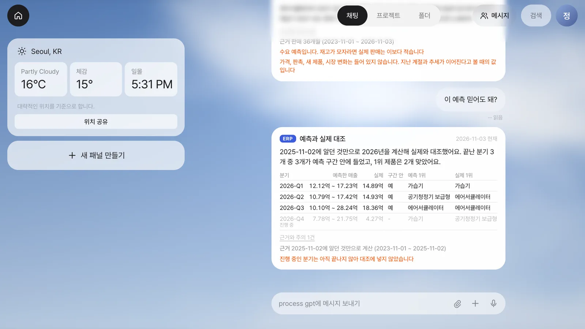
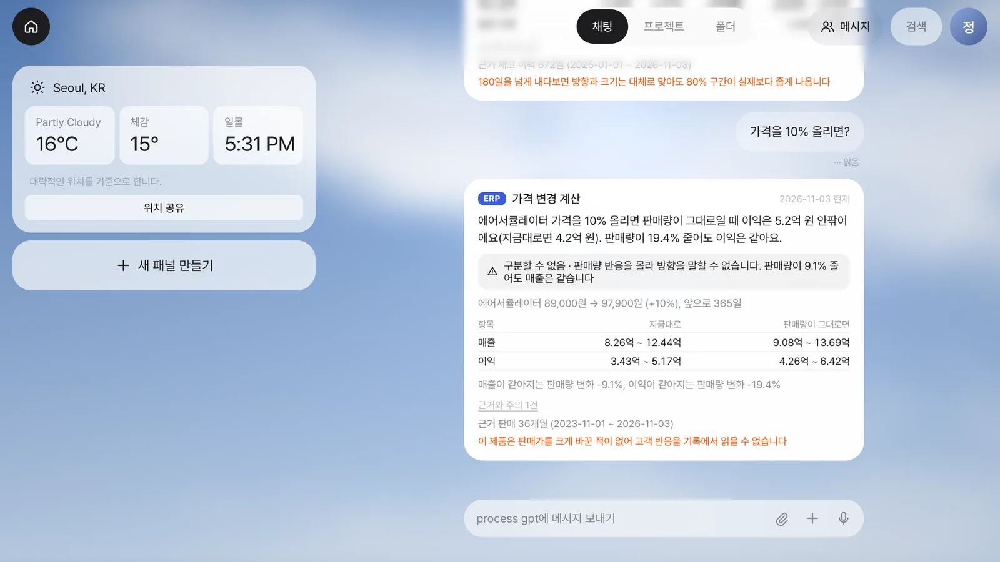

Process GPT Lite 채팅에 세금계산서를 올리면 ERP 전표 처리 여부를 묻고, 수락하면 MCP로 처리합니다. 말로 취소하면 서버가 사가 보상을 실행해 순변화가 0이 됩니다. 평범한 문장으로 물으면 ERP 화면과 같은 모델이 원장에 기록된 사실을 바탕으로 답합니다.
무엇을 · 왜#
에이전트가 ERP를 고치면 되돌릴 방법이 있어야 합니다. 이벤트 소싱 원장에는 처음 처리한 작업과 보상이 모두 남으므로, 무엇을 실행하고 되돌렸는지 따라갈 수 있습니다. 예측할 때 언어 모델이 숫자를 만들지 않습니다. 언어 모델은 문장을 해석해 모델과 입력값을 정하고, 숫자는 ERP 분석 화면이 쓰는 것과 같은 모델이 계산합니다.
| 영상 | 보는 것 | 원장 |
|---|---|---|
| 세금계산서 전표 처리와 취소 | 파일 올리기, 묻기, MCP 처리, 말로 취소, 막히는 경우 | 처리와 보상이 모두 남습니다 |
| 채팅으로 묻는 전망과 what-if | 내년 분기, 매출, 예측 검증, 발주·가격·납기·단종 | 새 이벤트 0건 |
먼저 알아 둘 것
- 회사와 세금계산서는 가상입니다. 예측 영상의 가온가전(데모)은 ERP의 생성기로 만든 가상 회사이고, 숫자는 그 회사의 원장에서 계산한 값입니다. 실제 회사의 성능이 아닙니다.
- BFF, 언어 모델, 에이전트, MCP 호출, ERP는 모두 실제로 실행했습니다. 로컬 환경에서 찍었습니다.
- Process GPT Lite의 ERP 연결은 개발 중인 판으로 찍었습니다. 공개 설치본에는 아직 들어 있지 않습니다.
- 부가세, 회계 화면은 전문가 검수 전입니다.
- 전표 처리는 정회계의 연동 키로 연결합니다. 에이전트는 연결된 구성원의 권한을 넘지 못합니다. 연결 화면은 키가 보이므로 영상에서 뺐습니다.
전표를 맡기고 말로 되돌리기#
- 파일만 올리기. 말없이 세금계산서 그림을 보냅니다. 가상 회사 주식회사 한빛부품의 공급가액 1,000,000, 세액 100,000, 합계 1,100,000입니다.
- 묻기. Lite가 파일에서 읽은 값을 보여 주고
ERP 전표 처리를 할까요?라고 묻습니다. 사람이 확인하고 ERP로 처리를 누릅니다.
전표 처리 묻기 - 처리. 거래처와 제품을 찾아 없으면 등록하고, 전표 입력·게시·지급을 진행합니다. 호출은 서버가 붙인 사가 번호 하나로 묶입니다.
- 결과. 구독자가 입고와 회계 전표 3건, 신고 집계를 이어서 만듭니다. 처리 결과를 확인한 뒤 ERP에서 읽은 변경 내용을 보여 줍니다. 보통예금 -1,100,000, 부가세대급금 +100,000, 상품 +1,000,000, 에어서큘레이터 모터 +20개입니다.

처리 결과 - ERP에서 확인. 청구서
BILL/2026/11/0001은 게시와 결제가 완료된 상태이며, 승인번호는 그대로입니다. 이력에는 정회계와 함께 에이전트 표식이 남습니다.
ERP 청구서 - 말로 취소.
방금 그거 취소할게라고 입력합니다. 되돌린 뒤에는 처리 전과의 차이가 모두 0이 됩니다. 회사 전체 잔액이 0이라는 뜻이 아니라, 이번 거래가 만든 효과를 반대 거래로 상쇄했다는 뜻입니다.
되돌린 결과 - 보상의 내용. 보상은 언어 모델이 아닌 서버가 실행합니다. 지급 취소와 대변 메모 게시 뒤 구독자가 반품과 회계, 신고를 반영합니다. 거래처와 제품은 남고, 수정세금계산서는 공급자에게 요청해야 한다고 경고합니다.

보상과 경고 - 원장. 이 청구서의 이벤트 8건이 그대로 있습니다. 에이전트 표식 5건, 보상 표식 3건입니다. 지운 기록은 없습니다.

이벤트 원장 - 되돌리면 안 될 때. 두 번째 세금계산서(대성정밀, 330,000)로 처리한 팬 블레이드 10개가 그사이 창고에서 출고됐습니다. 같은 말로 취소를 요청하면
되돌리지 않았어요, 재고가 음수가 된다(-10)는 이유와 다음에 할 일을 안내합니다. 일부만 취소하지 않고 장부는 그대로입니다.
되돌리지 않음
평범한 문장으로 묻기#
- 내년 어느 분기에 뭐가 제일 많이 팔릴까? 2027-Q3 에어서큘레이터가 80% 구간 5,352 ~ 8,077개, 1위일 가능성 99% 이상입니다. Q4 가습기는 39%로 낮고, 공기청정기 보급형도 비슷하다고 말합니다.

내년 분기 - 내년 매출은 얼마나 될까? 공급이 지금과 같으면 61.4억 원 안팎, 수요를 다 채우면 70.3억 원 안팎입니다. 차이 8.9억 원이 품절로 잃는 돈입니다. Q3 에어서큘레이터는 판매 기록 3,972개이고, 품절 146일의 수요를 복원하면 6,545개입니다.

내년 매출 - 이 예측 믿어도 돼? 2025-11-02까지의 자료만으로 2026년을 계산해 실제와 대조합니다. 끝난 분기 3개가 모두 구간 안에 들었고, 1위 제품은 2개가 맞았습니다.

예측과 실제 대조 - 그 제품 발주량을 1.5배로 늘리면 어떻게 돼? "그 제품"은 앞선 답변의 에어서큘레이터입니다. 매출 4,664만 원 안팎 증가, 전체 품절일 33일 안팎 감소, 재고 금액 772만 원 증가입니다. 앞으로 365일을 계산하므로 180일을 넘으면 구간이 실제보다 좁을 수 있다고 경고합니다.

발주 변경 - 가격을 10% 올리면? 판매량이 어떻게 변할지는 기록에 없어
구분할 수 없음이라고 말합니다. 대신 판매량이 19.4% 줄면 이익이 같고, 9.1% 줄면 매출이 같다는 손익 분기점을 보여 줍니다.탄력성 -1.2로 가정하면?이라고 물으면 입력한 가정이라고 밝히고 계산합니다.
가격 변경 - 납기와 단종.
납기가 일주일 늘면?은 평균 11.0일에서 18.0일로, 매출 8.4억 원 안팎 감소입니다.이 제품을 단종하면?은 매출 5.0억 원 안팎 감소이고, 제습기 쪽으로 옮겨 갈 비율 11% ~ 17%는 품절 사례 34건에서 추정했습니다. - 근거가 모자랄 때.
2024-06-01 기준 내년 매출은 얼마나 될까?에는 숫자를 내지 않고판매 24개월 필요 (지금 6개월)이라고 말합니다.
근거 부족 - 원장은 그대로입니다. 질문만 했으므로 새 이벤트가 없습니다. 시작과 끝의 원장 건수가 같습니다.
이 예측을 가상 회사 60곳에서 검증하면 분기 매출 오차 중앙값 6.6%, 80% 구간이 실제 매출을 담은 비율 91%, 1위 제품이 실제 수요 1위인 비율 75%입니다. 생성기와 추정기가 가정을 공유하므로 실제 회사에서는 예측 성능이 이보다 낮을 것으로 보아야 합니다.
확인 문제#
"방금 그거 취소할게"라고 하면 언어 모델이 되돌리나요?
아닙니다. 언어 모델은 말을 알아듣고, 보상은 서버가 실행합니다. 지울 수 없는 게시 문서는 반대 거래로 상쇄하고, 처음 처리한 작업과 보상을 모두 원장에 남깁니다.
되돌리지 않고 멈추는 때는 언제인가요?
그사이 다른 사람이 재고를 출고해 음수가 되는 경우처럼 보상이 안전하지 않을 때입니다. 일부만 취소하지 않고, 이유와 다음에 할 일을 안내합니다.
채팅의 숫자는 어디서 나오나요?
언어 모델이 만드는 숫자가 아닙니다. 문장을 해석해 모델과 입력값을 정하면, ERP 분석 화면과 같은 모델이 원장에서 읽은 사실로 계산합니다. 이 질문들로는 원장에 새 이벤트가 생기지 않습니다.